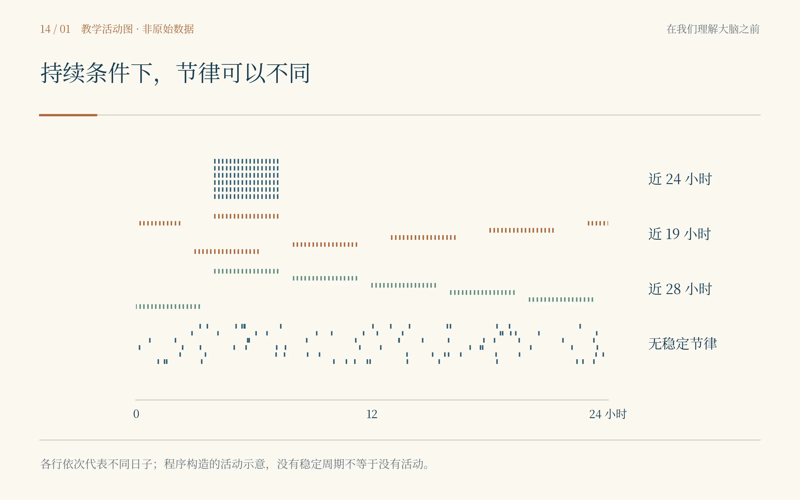
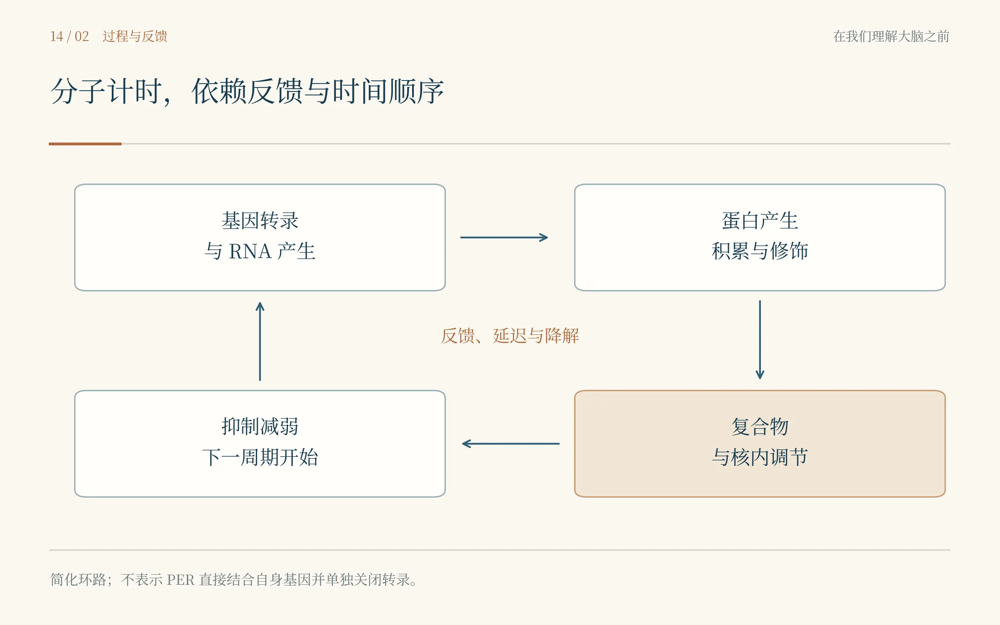
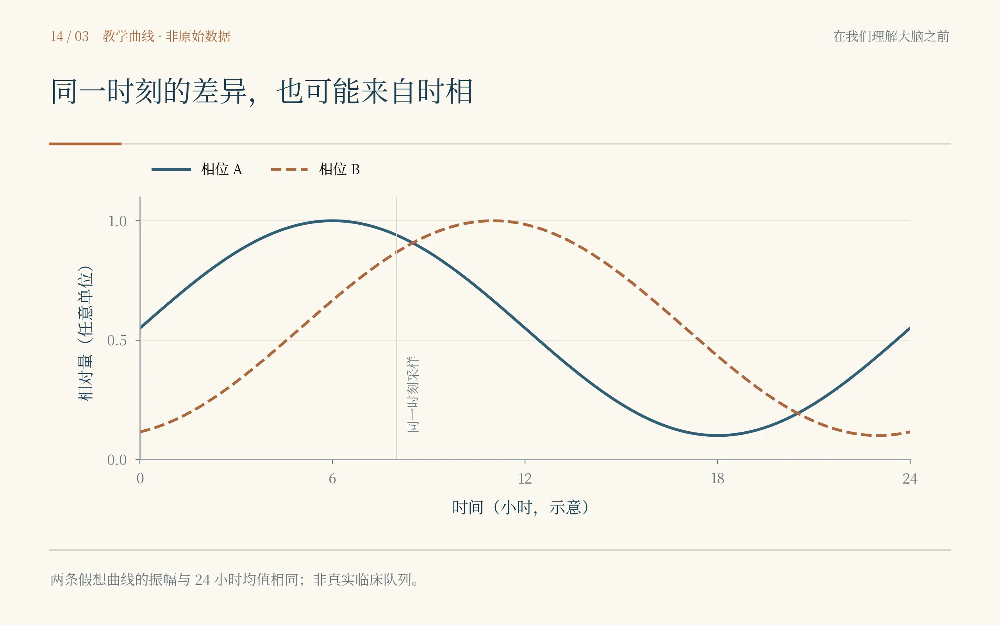
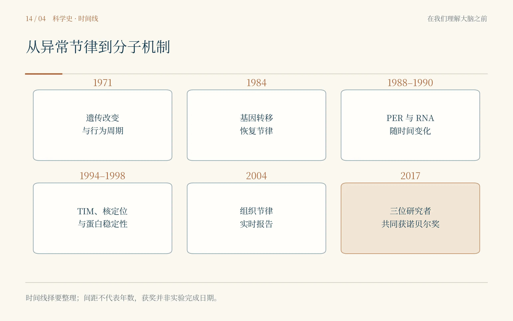

我没有按下开关。那只手停在墙边，忽然变得多余。房间里的人说还不到可以开灯的时候。我以为里面有人睡觉，便把脚步也放轻。他听见我的解释，摇了摇头，说他们等的是果蝇。我站在门口，感到刚才的谨慎有一点用错了地方，却不知道接下来应该把它放在哪里。
没有灯的时候，时间并不会完全不见。有人翻动纸页，走廊尽头的门开过一次，窗外的车声时近时远。我本来可以凭这些判断夜深了，可箱子里面的动物没有同样的条件。若不把白天和黑夜送进去，它们还有没有自己的早晨？这个问题比我最初听见的“果蝇”两个字大得多。
当我终于看清桌上的记录，已经到了1971年前后的加利福尼亚理工学院。罗纳德·科诺普卡正在研究果蝇的节律，西摩·本泽是他的导师。纸上有一条又一条活动的痕迹，像有人连续许多天，在同一处记下什么时候出门、什么时候回来。我伸手想沿着某一行看下去，他提醒我，不要把一天的结果看成全部。
这些果蝇提供了三种让人不能轻易略过的变化。有的节律比通常更短，接近十九小时；有的更长，接近二十八小时；还有的失去了清楚的昼夜节律。科诺普卡与本泽1971年的论文，将这些改变与同一遗传区域联系起来。所谓不再有稳定节律，并不意味着动物已经死去，也不意味着它从此一动不动，而是活动不再以原来的方式组织在时间里。[14.1]
我第一次看那几张记录时，差点把不整齐的一张挑出来，认为它大概没有做好。科诺普卡把它放回其他记录中间，说先看它是不是反复如此。那句问话很轻，却阻止我丢掉最重要的一部分。在我的数据表里，不整齐常被当作等待处理的问题；在这里，恰恰有可能是问题开始的地方。
我问本泽，研究一种昆虫什么时候活动，怎样走到人的生活。他没有先许诺疾病或治疗，只让我看看短周期与长周期是否能稳定传下去。一个行为特征若能与遗传改变联系，便可能为继续寻找机制提供入口。这不是说基因里藏着一只已经装好的钟，而是说我们终于得到一个可以拆开的故障。[14.1]
他们并不是通过把所有果蝇熬累，才得到这几种不同的日子。要把内在节律与外界的直接驱动分开，就需要在受控的光暗条件以及持续条件下记录，观察改变是否仍然存在。一个人听见每天的铃声才起床，与没有铃声仍然按近似的周期醒来，看上去都很规律，背后的解释却不一样。

完整图注与资料说明
所有点为程序生成的示意，行与行依次代表不同日子；没有稳定周期不等于没有活动。概念依据[14.1]，不是原论文的活动图。我在纸边画了两只钟，一只在箱外，一只在箱内。画完以后，本泽看了一眼，问里面那只钟是怎样被发现的。我说从行为推出来的。他点头，没有让我把画擦掉，只提醒我里面那只目前还是一个要被解释的东西。我又一次把一个方便的比喻画得太像实体，好像给它画上指针，就知道它为什么会走。
许多年以后，我到布兰代斯大学时，桌上已经不只有活动记录，还有基因与分子实验的纸张。杰弗里·霍尔关心果蝇表现得怎样，迈克尔·罗斯巴什把问题带向分子。他们说话的节奏不同。霍尔先问某个品系到底有没有稳定表型；罗斯巴什会追问，手上的材料是否足以找到那一段DNA。两个人有时互相打断，争论的却是同一件事应该从哪里下手。
我问能不能直接测所有的表达变化，罗斯巴什抬头看我，像在判断这个建议究竟有多不合时宜。我这才想起年份。在我的时代，许多技术把寻找变成了筛选；在这里，研究者还需要一点点缩小范围，确认哪个片段与哪个表型对应。手里那张泛黄的图，不是一条已经被数据库标注好的道路，而是正在留下的足迹。
我帮忙把几份结果按顺序放好，不小心将一张没有恢复节律的记录放到了成功的一摞。霍尔马上看了出来。他没有问我是不是故意，只让两摞重新摊开。我脸上发热，想解释自己没看清。他说，没看清就再看一次。实验室里的失误不都需要被解释成性格，有时它首先需要一张更不容易看错的标签。
1984年，来自不同研究团队的结果先后把问题推进了一大步。霍尔与罗斯巴什团队的Zehring等人，以及洛克菲勒大学迈克尔·扬团队的Bargiello等人，分别通过基因转移，使相关突变体重新出现节律。这比找出一段与表型相邻的DNA更进一步：把候选区域带回去，能够让某种失去的功能回来。[14.2,14.3]
“救回来了”这四个字，在不同实验室里有不同的样子。卡尔松那边，动物重新活动；这里，是纸上跨越许多天的痕迹重新带上周期。它们都没有因这个词而省掉对照。转入什么、转到哪里、有没有真正表达、恢复了哪些表现，仍然需要分开说明。我盯着那些记录，第一次觉得长时间等待也可以像一瞬间的动作那样让人紧张。
当天最后一项工作结束以后，罗斯巴什还在与人讨论一个片段的边界。霍尔已经把另一份行为记录带过来，两张纸压住了桌上本来放杯子的地方。我捧着杯子，不知道应该往哪里放。没人注意到我的困境。我只好站着喝完。那并不庄严，却比后来那张三人领奖的照片更能使我记住合作是什么样子。
在扬的实验室，问题同样没有因成功的转移而结束。一个名字叫period的基因，怎样让一个动物的行为以近似一天的周期重新出现？基因并不是每隔一天才存在一次。如果从DNA到蛋白质只是一路向前，为什么最后会不断回到起点？我沿着纸上的箭头走了一遍，发现自己的图里没有给返回留下位置。
夜间取样很快使我知道，研究时间的人也得服从时间。我原以为实验既然已经安排好，剩下只是定点来取材料。真到那个时刻，困倦、走廊里找不到的钥匙、刚刚才想起的记录纸，都能使“定点”成为一种需要努力保住的东西。一个样本迟了，不能只在表里把它写回原来的时间。
我遇见研究PER蛋白变化的那些材料，也看见后来保罗·哈丁参与的工作。Siwicki等人1988年的研究，借助抗体观察PER的分布与节律性变化；哈丁、霍尔和罗斯巴什1990年的研究，则使蛋白质与自身信使RNA周期变化之间的反馈关系成为关键问题。不同时间点不再只是重复，它们本身构成证据。[14.4,14.5]
一个深夜，我把一份数值很低的结果递给哈丁，问是不是样本出了问题。他先问几点取的。我说与上一批相同，他便让我再核对一次记录。检查以后才发现，我用的是上一批的文件顺序，实际采样的时段并不一样。我想把这个错误藏在后面的整理里，他让我把两种时间都保留下来，再判断哪些结果还能比较。
我从来没有觉得凌晨的一刻钟那么长。等它的时候，眼睛总往钟上看；错过它以后，又会希望它没有发生。我的科研生活常由截止日期安排，时间像一种外来的要求。到了这里，它却进入了现象本身：提前与延后，不只是做事是否守时，还可能使同一个系统在纸上显得很不一样。
PER的产生、积累、进入合适的细胞位置以及后来降解，使反馈有了发生的次序。一个产物能够参与限制前面的过程，等限制减弱，新的周期再开始。可如果把它画成PER直接伸手关掉自己基因的开关，仍然太省事；实际调控涉及蛋白伙伴、转录调节和时间延迟，不能让一根箭头替代所有中间环节。[14.5,14.13]

完整图注与资料说明
此图省略多个调节因子，只呈现概念关系；PER、TIM和DOUBLETIME在实际机制中承担不同作用。参见[14.5–14.10、14.13]。1994年，扬团队关于timeless的两篇研究，使“东西有没有做出来”与“做出来以后去了哪里”成为可以分开的事情。一方面，相关突变影响行为与per RNA的周期；另一方面，PER蛋白正常的核内定位也受到影响。莱斯莉·沃斯霍尔、阿米塔·塞加尔与同事的名字出现在这些实验里，而不是等到后来故事写完才附在末尾。[14.6,14.7]
我看着核外与核内的区别，想起前面一路都在问分子有多少。此刻数量不再独自够用。同样的一种蛋白，若进不去相应的位置，就未必能按预想的方式完成工作。这让我对“表达升高，所以功能增强”这类熟悉句子有了更深的迟疑。表达、定位、相互作用和真正发生的过程之间，仍然需要逐个建立联系。
塞兹与扬1996年的工作进一步研究PER与TIM进入细胞核的调节。桌上的图因此不再只是两个名字挨在一起，而开始有等待、结合与位置变化。延迟不是实验里讨厌的噪声，它可能是振荡之所以能够持续的组成部分。我在纸上把原来紧靠的两个箭头拉开，第一次给“还没到时候”留出正式的位置。[14.8]
到了1998年，Price等人与Kloss等人的研究把double-time带进这幅图。它编码的蛋白与酪蛋白激酶I相关，并影响PER的积累与稳定性。那只钟并不靠一种东西从早到晚越堆越高而工作；有些材料需要在适当的时候被处理掉，下一次循环才有可能出现。[14.9,14.10]
我问这样的工作是不是总能在同一天看到结果。旁边的人看了一眼记录，又看看我，没有说话。我知道自己问得不好。要证明存在一个周期，有时需要经历许多个周期；要证明变化与基因有关，还要等待下一代。果蝇的日子比一个课题的日子短得多，而研究者常常同时活在这两种速度里。
在洛克菲勒的走廊里，我又拿出手机。那个家里的号码还在，只是没有拨出去。我现在知道，时钟显示午夜，不代表身体里的每个过程都刚刚整齐地走到零点。它们有各自的时相，也会受环境影响。我不能用这点知识替所有疲倦作诊断，却开始不再把身体不肯听话都归给意志。
一个同样的问题，换到哺乳动物身上，需要新的证据。拉尔夫及同事1990年的仓鼠研究，在宿主自身相关中枢受损后移植视交叉上核区域组织，恢复出的行为周期跟随供体的特征。这使一个脑区的起搏作用得到强有力的实验支持：不仅是移植以后“又有活动”，而是恢复的周期带着供体的信息。[14.11]
但中央时钟重要，并不意味着其余组织全是没有节律的钟表指针。Yoo等人2004年用PERIOD2与荧光素酶构成实时报告系统，在离体的小鼠外周组织中观察到持续的振荡。测量使不同组织的时间变化能够被跟踪，而不是只能在某一个时刻取样，再想象其余时刻发生了什么。[14.12]
我把“中央协调”和“局部振荡”写在同一页，没有让它们互相擦掉。赫斯让我看见内脏活动需要协调，如今协调又有了时间维度。一个身体里的各个部分不必完全相同，也不能彼此毫无关系。果蝇里的分子机制给出了重要原则，人的生活却还需要在自己的组织、环境和行为层面继续研究。
这使我想到自己做过的一次分析。两组样本的某些数值不同，我曾经急着寻找表达异常和通路改变。我没有在这里替那项真实研究下新的结论，只在本子上画了两条假想曲线：它们振幅相同，一天的平均水平也相同，只是高峰到来的时间不同。若只在上午同一时刻取一点，差别会很明显；换个时刻，差别甚至可能倒过来。

完整图注与资料说明
两条假想曲线的振幅和24小时均值相同，仅时相不同；这是采样解释的逻辑例子，不指向任何真实临床队列。时间序列测量可参见[14.4–14.5、14.12]。我看着那两条自己画出的线，心里沉了一下。它们不是我的数据，不能拿来证明过去的结果错了；但它们指出一种过去没有充分考虑的可能。疾病组与对照组的生活节律、采样时段、睡眠和进食安排，可能影响我们测到的状态。时间有时是需要控制的条件，有时又正是被研究的变化，不能只在方法学里补上一个词就算处理完了。
过去我很喜欢一张整齐的图：上午采样，下午测量，最后得到一组数字。现在我开始想到，采样之前已经发生了很多事。一个人何时睡下，何时起床，身体里的过程进行到哪里，并不会因为进入采样室就被重置。研究者把事情放进同一张表，不表示被研究的身体也自动站到了同一个起点。
夜间那一批记录终于整理完时，有人问我要不要出去吃点东西。我说可以，随后又问现在是什么时间。他告诉我一个数字，我竟然笑了一下。这趟旅行给了我许多关于时间的知识，却没有使我不再需要别人告诉我几点。知道机制与过好一个晚上，仍然是两件需要分别完成的事。
2017年十二月，斯德哥尔摩的灯亮起来。我看见霍尔、罗斯巴什与扬的名字并排出现在同一个奖项中，三人共同获得生理学或医学奖，表彰控制昼夜节律的分子机制相关发现。授奖并没有说人的每一种失眠都已经有了同一个答案，它承认的是一段从遗传改变走向分子计时机制的重要工作。[14.13,14.14]
我在会场里想起最先看到的那张不整齐的果蝇活动图。那时候没有三个人同台的场面，只有一个表型反复表现得不一样。后来出现基因片段、转移、蛋白、核定位、反馈与降解，每一项都使“它里面有一只钟”少一点比喻，多一点可以检验的过程。
罗斯巴什在宴会发言中谈到移民与外国研究者对科学生活的重要性。听到这里，我想起前面那些经过不同国家、在不同制度中继续工作的人。人来到实验室并不只带来一种技术，还带着口音、家庭和过去。最后获得一项共同结果，不意味着这些来路都可以被一张统一的照片抹平。[14.15]
我又想到林德奎斯特、安娜，以及那些论文作者栏上的名字。奖项有自己的人数限制，实验室却不会因此只剩下三把椅子。哈丁的夜间取样，沃斯霍尔与塞加尔追问蛋白和行为的变化，许多没有被我遇见的人维持品系、核对记录，都使那个看上去宏大的机制能够留在纸上。

完整图注与资料说明
时间线为择要整理，间距不对应年数；诺奖是后来的评价节点，不是实验完成的日期。参见[14.1–14.15]。仪式结束以后，我没有立刻去寻找下一位科学家。我在一张空椅子上坐下来，把前三页新的记录翻了一遍。赫斯问身体为什么需要改变，卡尔松让我看见愿望与动作之间还有化学过程，眼前这些研究又使行动获得了一个时间。知道外面有什么，已经不足以决定接下来做什么；身体的状态、可以走通的回路和过去一段时间里的安排，都在参与。
我终于给家里拨了电话。这次先听见的是很长的等待声，随后母亲说话了。我问有没有打扰她。她说刚起来，正准备烧水。我本想告诉她，我最近学到了身体里面怎样计时，话到嘴边，却先问她昨晚睡得怎样。她回答得很普通，我听得也比过去慢。电话里没有出现任何一个基因名字，那些知识却没有白学。
挂断以后，我把手机放在椅子旁边，没有立即打开别的东西。身体还需要休息。我终于不再把每一次停下来都当成一段没有产出的空白。房间外有人经过，鞋底落在地上的声音很轻。我听了一会儿，忽然想起小时候在家，自己也曾在一片脚步声里认出母亲来了。
同样的声音，别人可能只听见有人经过，我却会抬头。今天学到的时钟不能独自解释这件事，前面的感觉通道也不能。经历已经在身体里留下什么，使一个原本普通的信号改变了分量。我翻到下一张空白页，没有先写科学家的名字，只记下刚才那一步。
窗外慢慢亮了。没有人按下我最初伸手去找的那个开关。